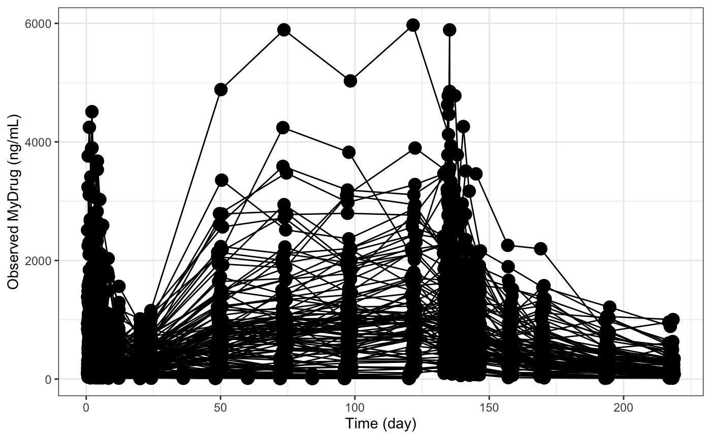
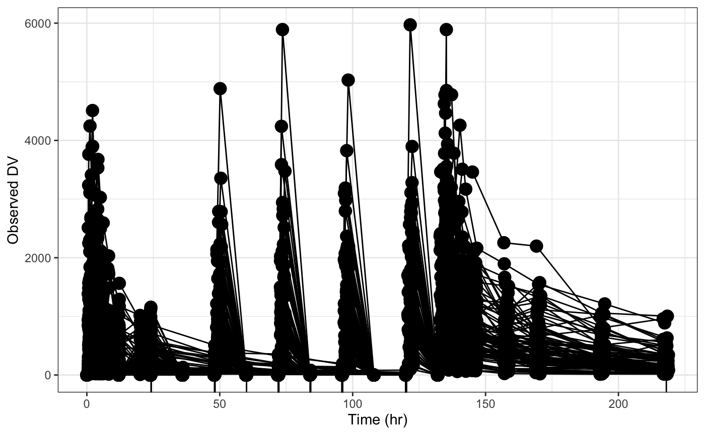

dv_time.RdPlot DV versus time
dv_time(df, x = pm_axis_time(), y = pm_axis_dv(), xunit = "hr", yname = "DV", group = "ID", xs = list(), ys = list(), log = FALSE, xby = NULL, ...) dv_tafd(df, x = pm_axis_tafd(), ...) dv_tad(df, x = pm_axis_tad(), ...)
| df | data frame to plot |
|---|---|
| x | character name for x-axis data |
| y | character name for y-axis data |
| xunit | time units; used to form x-axis label |
| yname | used to form y-axis label |
| group | passed to |
| xs | see |
| ys | see |
| log | if |
| xby | interval for x-axis breaks |
| ... | passed to |
A single plot.
Plots are generated using y_time,
which then calls scatt.
Since this function creates a scatter plot,
both the x and y columns must
be numeric.
If the data set includes a BLQ column,
the values in the y column are
set to NA when BLQ is
not equal to 0.
dv_time(df, yname="MyDrug (ng/mL)", xunit="day")